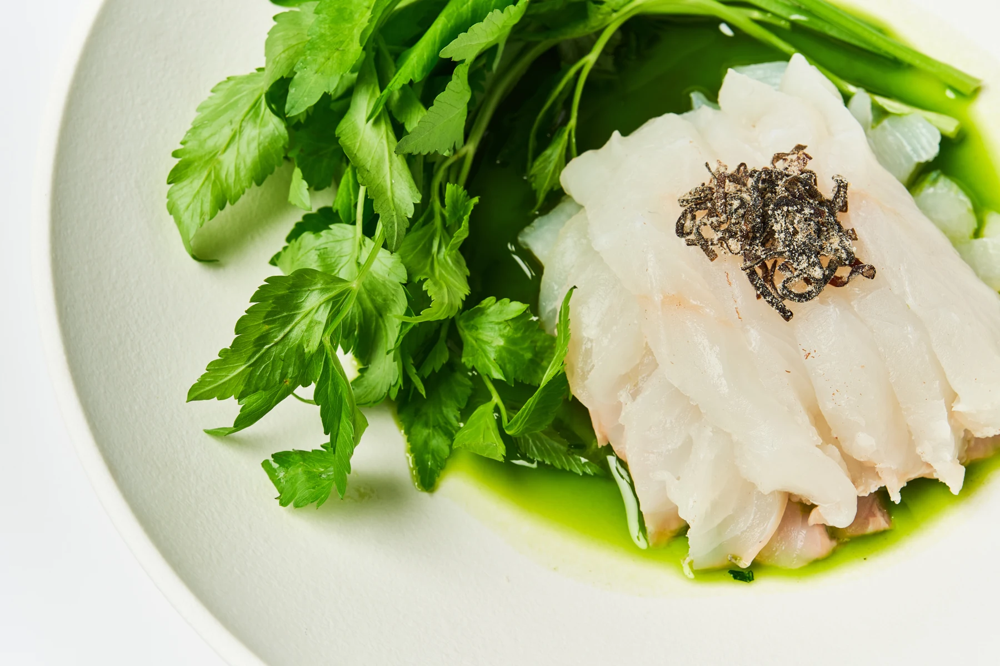
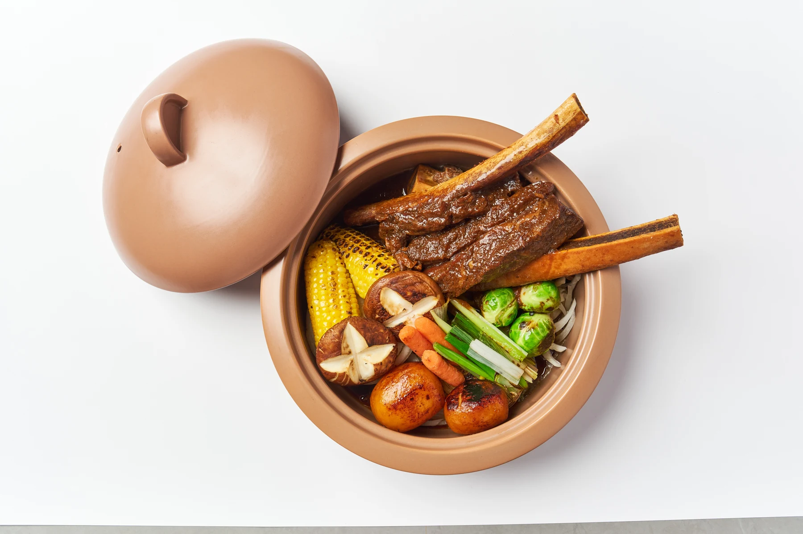
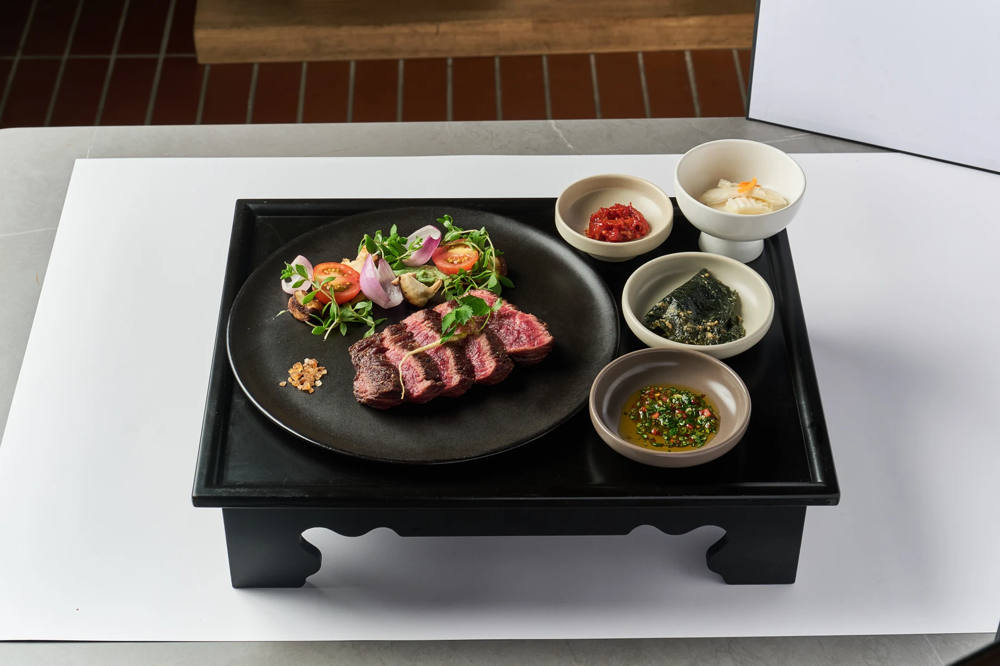
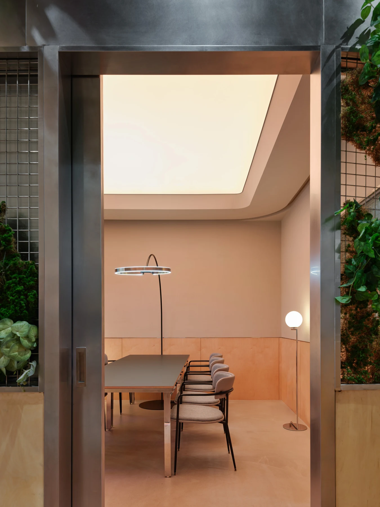
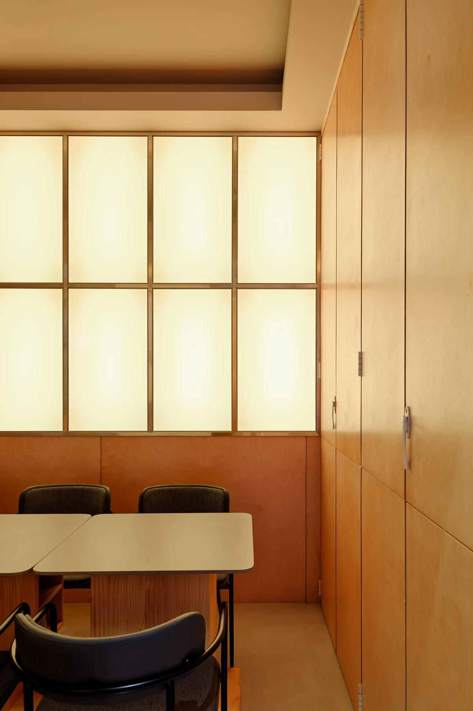
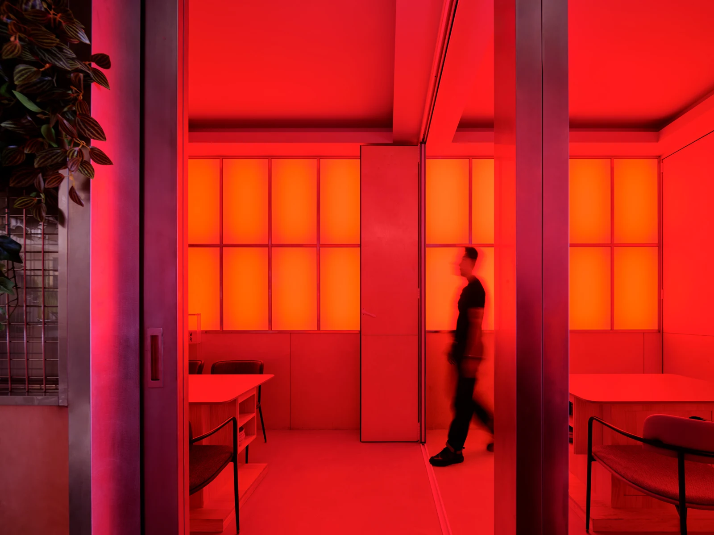
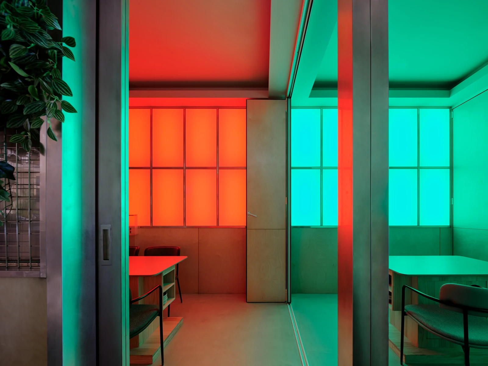
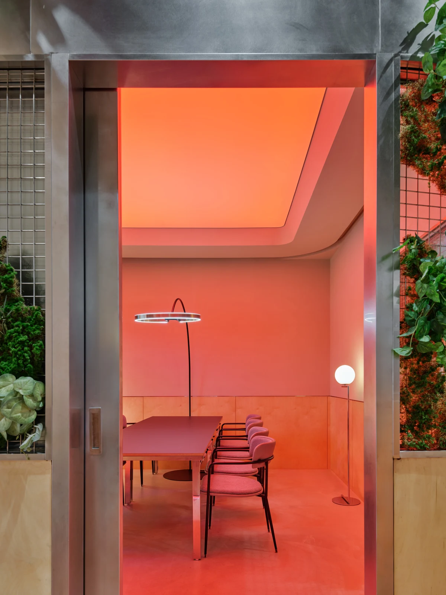
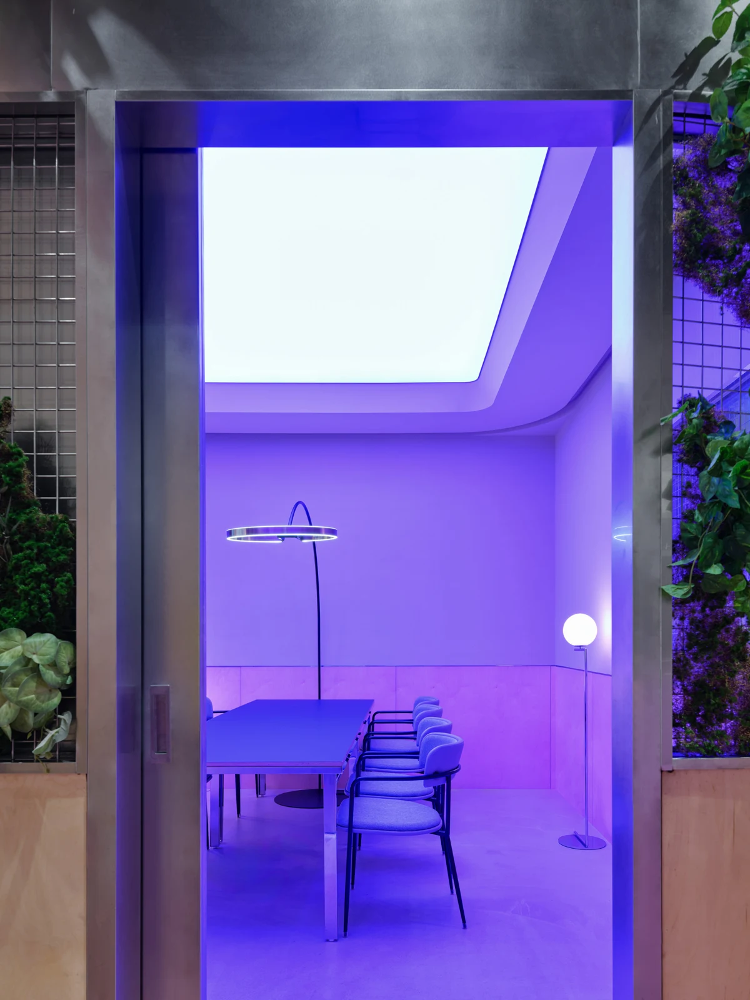

01
우대갈비찜
부드러운 우대갈비찜과 채소
KOREAN DINING, REIMAGINED.
그릇 위에 가꾼 작은 정원



한식을 즐기는 또 다른 방법.
모락정원은 익숙한 재료와 다채로운 조합으로
한 접시 안에 작은 정원을 가꿉니다.
푸른 채소의 싱그러움과 정성스럽게 담아낸 음식.
편안한 식사와 즐거운 대화를 함께 나누세요.
좋은 사람들과 함께하는 한 끼.
편안히 머무는 순간을 모락정원에서.


DETAILS OF OUR GARDEN
공간의 온도부터 조명의 색까지.
머무는 순간마다 새로운 분위기를 만나보세요.




모락정원 가맹 안내
추후 작성
추후 작성
추후 작성
추후 작성
추후 작성